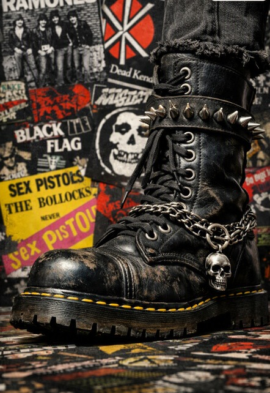
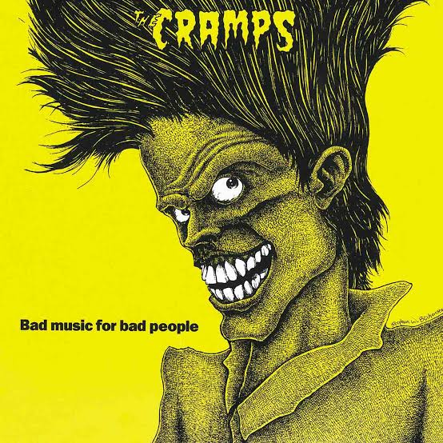
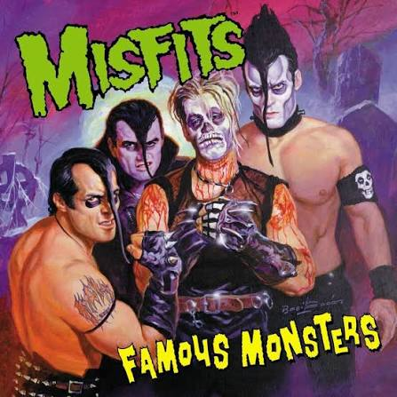
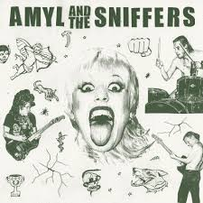
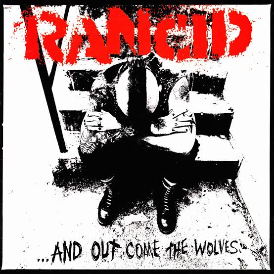

top de caratulas de punk-post punk que a mi consideracion fueron las mas llamativas de la historia, aparte de que son fuego en el genero, aunque podria creerse que el impacto visual por tratarse del genero tendria que ser sucio que no se pueda entender que es lo que estamos viendo
pero en realidad hay estilos que impactan y sorprenden por su brutalidad invasiva sino que tambien algunas se mofan de su poder visual minimalista, como cuando sabes que tan densa es la banda y solo tuy sabes que es lo que te quiere decir la imagen por que nadie mas lo conoce, esa
imagen te dice, preparate por que somos los mismo pero creamos no solo uyna obra de arte, sino fuego puro, poder absoluto, te sembraremos energia y voluntad, el mana que nos hace resistir a diaro, no solo estas viendo una imagen, estas viendo el logo de revolucion, el logo de romper
romper esquemas, el logo de un nuevo nivel de sonido, mira lo que hemos conseguido.